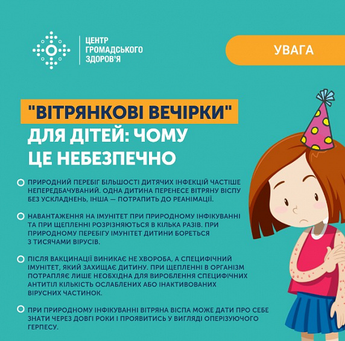
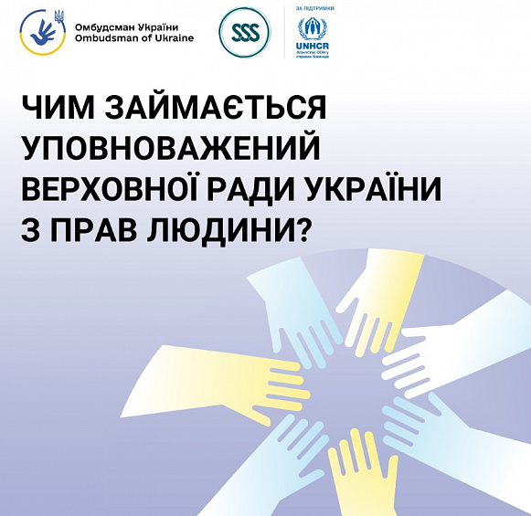

КНП "Хмільницька центральна лікарня" Хмільницької міської ради
Про нас
КНП "Хмільницька ЦЛ" є
лікарняним (амбулаторним) закладом охорони здоров’я – комунальним
унітарним некомерційним підприємством, що надає послуги
вторинної/спеціалізованої медичної допомоги будь-яким особам в
порядку та на умовах, встановлених законодавством України.
Основною метою КНП "Хмільницька ЦЛ" є надання вторинної медичної
допомоги та здійснення управління медичним обслуговуванням
населення, а також вжиття заходів з профілактики захворювань
населення та підтримки громадського здоров’я.
-
створення разом із Засновником умов, необхідних для забезпечення доступної та якісної медичної допомоги населенню, організації належного управління внутрішнім лікувально-діагностичним процесом та ефективного використання майна та інших ресурсів;
-
надання пацієнтам відповідно до законодавства на безвідплатній та відплатній основі послуг вторинної/спеціалізованої (третинної/високоспеціалізованої) стаціонарної медичної допомоги, у тому числі екстреної (невідкладної), необхідної для забезпечення належних профілактики, діагностики та лікування хвороб, травм, отруєнь чи інших розладів здоров’я, медичного контролю за перебігом вагітності й ведення пологів і післяпологового періоду;
-
надання пацієнтам відповідно до законодавства на безвідплатній та відплатній основі спеціалізованої (високоспеціалізованої) амбулаторної медичної допомоги (спеціалізована медична практика);
-
організація, у разі потреби, надання пацієнтам медичної допомоги високого рівня спеціалізації на базі інших закладів охорони здоров’я шляхом направлення пацієнтів до цих закладів у порядку, встановленому законодавством;
-
організація взаємодії з іншими закладами охорони здоров’я з метою забезпечення наступництва у наданні медичної допомоги на різних рівнях та ефективного використання ресурсів системи медичного обслуговування;
-
проведення експертизи тимчасової непрацездатності та контролю за видачею листків непрацездатності;
-
направлення на медико-соціальну експертизу осіб зі стійкою втратою працездатності; проведення профілактичних оглядів;
-
придбання, зберігання, перевезення, реалізація (відпуск), знищення, використання наркотичних засобів, психотропних речовин, прекурсорів;
-
організація та проведення з’їздів, конгресів, симпозіумів, науково-практичних конференцій, наукових форумів, круглих столів, семінарів тощо;
-
провадження зовнішньоекономічної діяльності згідно із законодавством України;
-
здійснення іншої не забороненої законодавством діяльності, необхідної для належного забезпечення та підвищення якості лікувально-діагностичного процесу, управління ресурсами, розвитку та підвищення якості кадрового потенціалу.
Новини КНП "Хмільницька ЦЛ"
-
“ВІТРЯНКОВІ ВЕЧІРКИ”: ЧОМУ ЦЕ НЕБЕЗПЕЧНО ДЛЯ ЗДОРОВ’Я ДИТИНИ
×Нещодавно соцмережами ширилось відео, де лікарка розповідала про звернення мами, дитина якої інфікувалася вітряною віспою на так званій вітрянковий вечірці: у дитини була гарячка, висип по всьому тілу, зокрема в роті та на статевих органах, виражений свербіж, тому дитина відчувала дискомфорт при сечовипусканні, прийомі їжі та постійно плакала. ... Виявляється, такі ледь не середньовічні речі як “вітрянкові вечірки” досі практикуються, а замість безпечного щеплення дітей “примусово” інфікують задля формування імунітету від вітряної віспи. Чому такі “вечірки” небезпечні для дитини та у чому перевага щеплення – пояснюємо далі. Природний перебіг більшості дитячих інфекцій найчастіше непередбачуваний. Одна дитина може переносити вітряну віспу без ускладнень, інша же потрапить в реанімацію. Пускати протікання інфекційного захворювання на самоплин та свідомо, без видимих причин відмовлятись від вакцинації — як мінімум безвідповідальність батьків. Навантаження на імунітет при природному інфікуванні та при введенні вакцини розрізняються в кілька разів. Так, при природному перебігу хвороби, імунітет дитини бореться з тисячами вірусів, які при цьому вражають все нові й нові клітини. При введенні вакцин, в організм потрапляє лише та кількість ослаблених або інактивованих вірусних частинок, яка необхідна для вироблення специфічних антитіл. Після вакцинації виникає не хвороба, а специфічний імунітет, який надійно захищає дитину. При природному інфікуванні на вітряну віспу деякі наслідки хвороби дають про себе знати через довгі роки. У випадку з вітряною віспою — живий вірус залишається «спати» в нервових волокнах. При зниженні імунітету, стресі та інших несприятливих станах вірус стає знову активним, проявляючись у вигляді оперізуючого герпесу. Обравши своєчасну вакцинацію, ви захистите свою дитину не тільки від хвороби, але і від негативних віддалених наслідків.
-
ЧИМ ЗАЙМАЄТЬСЯ УПОВНОВАЖЕНИЙ ВЕРХОВНОЇ РАДИ УКРАЇНИ З ПРАВ ЛЮДИНИ?
×особисті права та свободи (право на життя, право на свободу та особисту недоторканність, свобода пе-ресування, право на повагу до гідно-сті, право на вільний розвиток своєї особистості, недоторканність житла, таємниця комунікації, право на недо-торканність особистого життя, право на недоторканність сімейного життя, право на свободу світогляду і віроспо-відання, свободу думки та слова) ... громадянські та політичні права (право на інформацію, право на свободу обʼєднання, право на участь в управлінні державними справами, право доступу до державної служби, право обирати, право бути обраним, право на мирні зібрання, право на звернення громадян, право на допомогу, права меншин та осіб, які до них належать, право мовного самовизначення, право власності);
права військовослужбовців, поліцейських, пенсіонерів з-поміж осіб, звільнених із військової служби, ветеранів і членів їхніх сімей;
право людини не бути підданою катуванню, жорстокому, нелюдському або такому, що принижує її гідність, поводженню чи покаранню;
права дитини;
права цивільних осіб, які постраждали внаслідок війни Російської федерації проти України;
економічні, соціальні та культурні права (право власності на результати своєї інтелектуальної, творчої діяльності, право на підприємницьку діяльність, право на страйк, право на відпочинок, право на со-цільний захист, право на житло, право на достатній життєвий рівень, право на охо- рону здоров'я, право на безпечне для життя і здоровʼя довкілля, право на віль-ний доступ до інформації про стан дов-кілля, право на освіту, право на творчість, право на результати своєї інтелектуальної, творчої діяльності, право на компенсацію збитків, завданих державою, право знати свої права та обовʼязки);